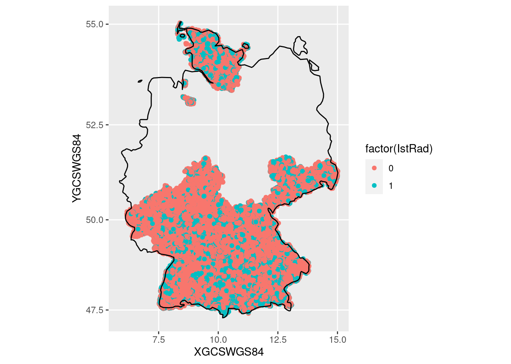

Unfall
Setup
Datenquelle: Unfallatlas.
full_join(years[[1]], years[[2]])all_accidents <- reduce(years, full_join)world <- map_data("world")
world |>
filter(region == "Germany") |>
ggplot(aes(long, lat, group = subregion)) +
geom_path() +
coord_map()accidents |>
ggplot(aes(X, Y, color = factor(ULAND))) +
geom_point() +
coord_map(projection = "mercator")
accidents |>
count(ULAND)# A tibble: 8 × 2
ULAND n
<chr> <int>
1 01 11692
2 02 7215
3 04 2932
4 06 19678
5 07 13281
6 08 33931
7 09 50121
8 14 12823accidents |>
filter(Y > 59) |>
select(ULAND, everything())# A tibble: 19,429 × 27
ULAND X Y OBJECTID UREGBEZ UKREIS UGEMEINDE UJAHR UMONAT USTUNDE
<chr> <dbl> <dbl> <dbl> <dbl> <chr> <chr> <dbl> <chr> <chr>
1 01 6.07 59.5 1 0 53 120 2016 01 09
2 01 5.75 60.1 2 0 57 010 2016 01 17
3 01 6.00 59.6 3 0 62 008 2016 01 00
4 01 6.11 59.7 4 0 03 000 2016 01 15
5 01 6.06 60.1 5 0 55 028 2016 01 14
6 01 5.43 59.6 6 0 61 044 2016 01 17
7 01 5.58 59.7 7 0 60 054 2016 01 17
8 01 6.24 60.1 8 0 55 029 2016 01 11
9 01 5.80 59.7 9 0 60 085 2016 01 16
10 01 4.94 60.7 10 0 54 126 2016 01 10
# … with 19,419 more rows, and 17 more variables: UWOCHENTAG <dbl>,
# UKATEGORIE <dbl>, UART <dbl>, UTYP1 <dbl>, ULICHTVERH <dbl>,
# IstStrasse <dbl>, IstRad <dbl>, IstPKW <dbl>, IstFuss <dbl>, IstKrad <dbl>,
# IstGkfz <dbl>, IstSonstig <dbl>, LINREFX <dbl>, LINREFY <dbl>,
# XGCSWGS84 <dbl>, YGCSWGS84 <dbl>, year <dbl>